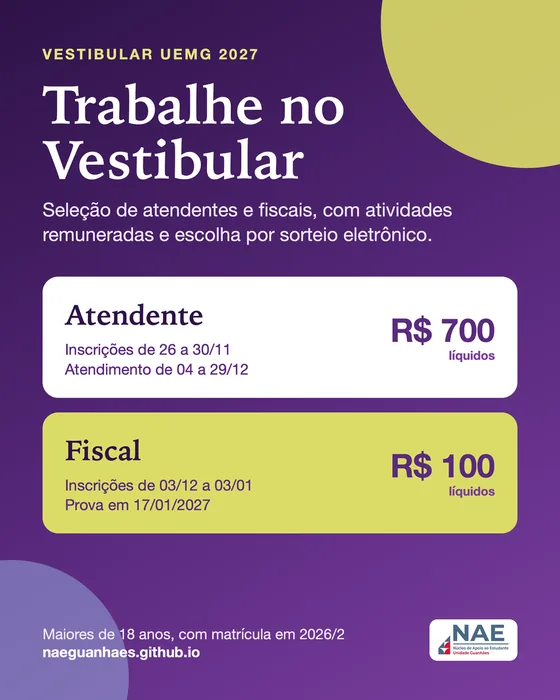

Trabalhe no Vestibular atendente ou fiscal, R$ 700 ou R$ 100
A MSCONCURSOS, empresa que organiza o Vestibular UEMG 2027, abriu seleção de estudantes da UEMG para trabalhar como atendente presencial durante as inscrições do vestibular e como fiscal no dia da prova. As atividades são remuneradas e a escolha é por sorteio eletrônico.
Inscrições para atendente abertas até 30/11 · para fiscal, de 03/12 a 03/01Inscrições para atendente encerradas · para fiscal, abrem em 03/12Inscrições para fiscal abertas até 03/01Inscrições encerradas · prova do vestibular em 17/01É hoje: prova do Vestibular UEMG 2027Seleção encerrada

Quem pode participar
Regularmente matriculado no 2º semestre letivo de 2026, na graduação ou na pós-graduação stricto sensu, de qualquer Unidade Acadêmica.
A seleção é só para maiores de 18 anos.
Com o comprovante de matrícula tirado no Lyceum, pelo seu acesso pessoal, enviado no próprio cadastro.
Atendente presencial
R$ 700 líquidos
Em parcela única, mais R$ 50 por plantão extra de 4 horas.
Fiscal de prova
R$ 100 líquidos
Em parcela única, pelo dia da prova (17/01/2027).
Seleção
Sorteio eletrônico
Entre os estudantes inscritos dentro do prazo.
Pagamento
Pix
Sem taxa de inscrição.
Atendente presencial
O atendente ajuda os candidatos no período de inscrição presencial do vestibular, de 04 a 29 de dezembro de 2026, em turno de 4 horas por dia, no horário de funcionamento da Unidade Acadêmica para a qual se candidatou.
- Inscrições: de 26 a 30 de novembro de 2026, no cadastro de colaboradores da MSCONCURSOS.
- Treinamento obrigatório: virtual, em 01/12/2026, com até 30 minutos; o horário será informado depois. Quem não estiver na sala virtual no horário perde a vaga.
- Remuneração: R$ 700,00 líquidos, por Pix, em parcela única, em até 30 dias depois do fim das inscrições do vestibular, mais R$ 50,00 por plantão de 4 horas em datas e horários definidos e autorizados pela MSCONCURSOS.
- Faltas: avise antes a MSCONCURSOS, para combinar uma troca com outro atendente ou para a empresa indicar um substituto. Falta sem aviso prévio ou sem documento que comprove o motivo desconta R$ 50,00 do valor a receber.
Fiscal no dia da prova
O fiscal trabalha na aplicação da prova de conhecimentos gerais do Vestibular UEMG 2027, em 17/01/2027, num turno único de até 8 horas, já contado o treinamento.
- Inscrições: de 03/12/2026 a 03/01/2027, no mesmo cadastro de colaboradores.
- Remuneração: R$ 100,00 líquidos, por Pix, em parcela única, no primeiro dia útil depois da prova.
- Quem tiver parente até o 3º grau, inclusive por afinidade, fazendo o vestibular no seu local de trabalho precisa avisar a MSCONCURSOS, que troca o local de atuação.
Passo a passo da inscrição
Atendente: de 26 a 30/11. Fiscal: de 03/12 a 03/01. Inscrição fora desses períodos não é aceita.
-
Baixe o comprovante de matrícula
Entre no Lyceum com o seu acesso e salve o comprovante de matrícula. Não sabe entrar? Veja o guia do Lyceum.
-
Faça o cadastro de colaborador
No cadastro de colaboradores da MSCONCURSOS, preencha todos os dados pedidos e envie o comprovante de matrícula (o envio é obrigatório). Informações falsas ou divergentes tiram o estudante da seleção.
-
Espere o contato
Depois da inscrição, a MSCONCURSOS faz contato por e-mail, WhatsApp ou ligação para confirmar a sua participação. Fique de olho, inclusive no spam.
-
Participe do treinamento
Para atendente, o treinamento é virtual, em 01/12. Para fiscal, ele faz parte do turno do dia da prova.
Mudanças no edital saem no site da MSCONCURSOS (msconcursos.com.br), e acompanhar é responsabilidade de quem se inscreve. Os casos omissos são resolvidos pela empresa.
Dúvidas frequentes
Posso me inscrever para as duas funções?
O edital prevê inscrição para atendente e/ou fiscal, cada uma no seu período: atendente de 26 a 30/11 e fiscal de 03/12 a 03/01.
Fazer a inscrição garante a vaga?
Não. A escolha é por sorteio eletrônico, e a MSCONCURSOS confirma a participação por e-mail, WhatsApp ou telefone.
Tem taxa de inscrição?
Não. O cadastro é feito pela internet, sem custo.
Quando recebo?
Atendente: em até 30 dias depois do fim das inscrições do vestibular, por Pix, em parcela única. Fiscal: no primeiro dia útil depois da prova, por Pix.
Tenho 17 anos. Posso participar?
Não. A seleção é só para estudantes maiores de 18 anos.
Quero fazer o vestibular ou conheço quem vai fazer. Onde vejo as regras?
Na página do Vestibular UEMG 2027, com datas, taxa, isenção e vagas.